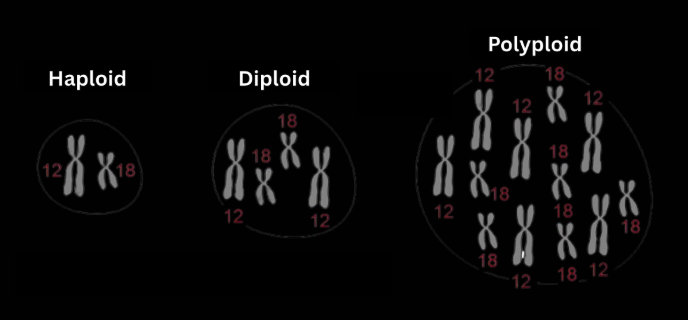
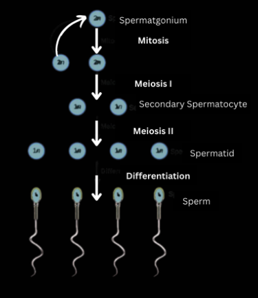
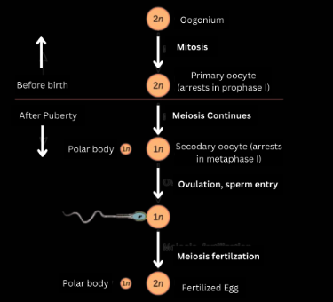

Ploidy
Ploidy is simply the number of chromosomes that can be found in an individual cell.
Symbols are used to represent the type of ploidy at hand:
- n represents the haploid number of chromosomes, the number of chromosomes in a single set
- The coefficient in front of n represents the number of sets of chromosomes, for example, 2n is double that of n
Key Types of Ploidy to know for IJSO:
- Haploidy:half (n) of the somatic (non-sex) cell chromosome number.
- Diploidy:individual with two sets of the basic, complete somatic (2n).
- Polyploidy:individual with more than diploidy.
- Aneuploidy:occurs when there is an error in cell division, resulting in more or less chromosomes. A missing chromosome is called a monosomy while an extra chromosome is called a trisomy. For example, Down Syndrome is caused by a trisomy on chromosome 21.
Autosomal/somatic/non-sex cells have 2n or diploid and sex-cells have n or haploidy (half of autosomal)

Gametogenesis
Gametogenesis is the formation of gametes (egg and sperm) via meiosis (for more detail, visit cell cycle lessons). Sperm formation is called spermatogenesis while egg formation is called oogenesis.
Spermatogenesis
- Occurs in the walls of the seminiferous tubules.
- The process begins with STEM cells, called spermatogonia which undergoes mitosis followed by meiosis to form 4 genetically varying sperm cells.
- Note that spermatogonia (stem cells) are present at birth, but inactive in state.

Oogenesis
- Occurs in the outermost layer of the ovaries.
- The process begins with STEM cells, called oogonium which undergoes mitosis and arrests the primary oocyte in prophase I (before birth).
- After puberty, meiosis continues.
- Note that by birth, all oogonium are already arrested in prophase I, till puberty.
- Oogenesis also exhibits the formation of polar bodies, which contain the adequate number of chromosomes but not enough cytoplasm and nutrients to develop into viable eggs.
- This occurs to ensure that the final ovum is rick in nutrients and cytoplasm!
- Note that by the end, there are 3 polar bodies (one formed during meiosis I, two formed during meiosis II) and only ONE viable ovum.

Written by Josephine Ankomah